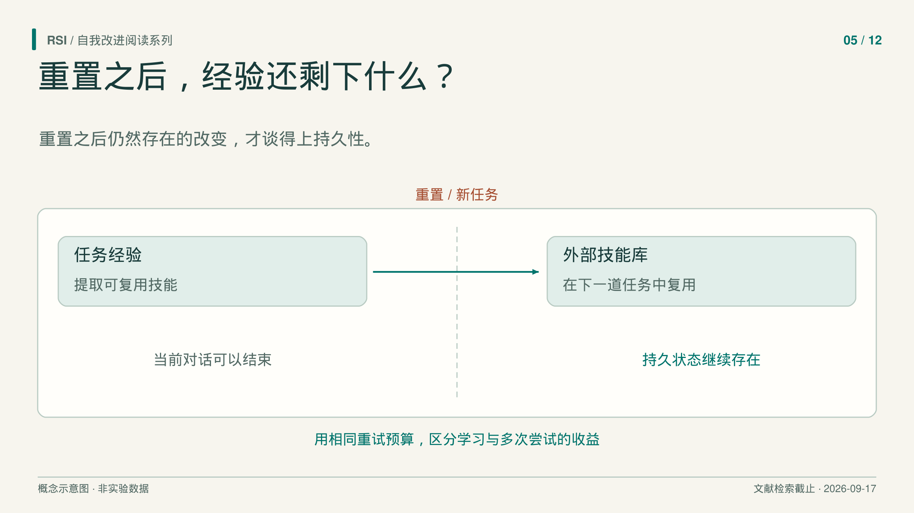
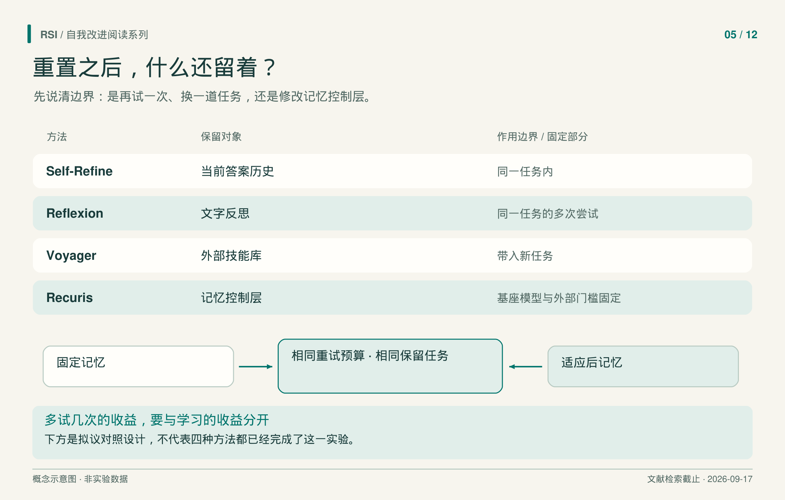

助手根据失败测试修好了一个 bug，程序确实变好了。但它是否获得了明天还能用的经验，要看改变被保存在哪里。
设想一个仅用于说明的例子：生成的函数没有处理空输入。助手可以补上判断，把错误写进笔记，也可以把修好的函数存入技能库。这些动作留下的东西不同。新对话可能读不到旧答案和笔记，新任务却可能检索到函数。整个过程都可以不更新模型权重。
因此，判断持久改进时，应先问：经过哪一种重置之后，什么仍被保留？在公平对照下，它还有用吗？

先确定状态能保留多久
Self-Refine 让同一个固定语言模型依次生成初稿、提供反馈、修改答案。当前任务的旧输出和反馈继续进入提示，直到满足停止条件，或最多运行四轮。
这种安排让模型有机会重新检查遗漏的要求。历史记录的直接作用范围是当前任务，方法本身没有训练模型，也没有提供一个经过学习、能跨无关任务保留的改进器。因此，应先评价修订后的答案质量。清空对话后是否还能迁移，需要另一项实验。
对照还要考虑调用次数。多轮系统比单次初稿多了尝试机会，收益可能来自反馈，也可能来自多采样，甚至来自第一次提示没有说清全部要求。这几种解释不能只用一个最终分数区分。
Huang 等人 就分别检查了这些条件。他们研究的是没有外部反馈的内在自纠错，结论适用于所测试的模型和推理任务。只让外部判断决定“现在是否停止修改”，也已经向系统加入了正确性信息。把要求完整放入初始提示、控制采样机会，都会改变结果的解释；这不是关于所有未来模型或所有修订任务的不可能性证明。
反思把教训传给下一次尝试
Reflexion 增加了显式记忆：agent 尝试任务，评价器给出信号，反思步骤把轨迹和反馈压缩成语言教训，再放入容量有限的记忆。后续尝试读取这些教训，模型权重保持不变。
这里直接保留的是同一任务多次尝试之间的信息。反馈也因环境而异：问答可以用参考答案的完全匹配，交互环境可以提供成功信号，代码任务则执行模型生成的测试。它们携带的信息和可能出错的位置不同。
例如，论文报告 HumanEval Python 的最终 pass@1 从 GPT-4 基线的 80.1% 提升到 91.0%；MBPP Python 却从 80.1% 降到 77.1%。作者将后一种退化联系到自生成测试的假阳性：错误程序通过了不充分的测试，系统因而收到误导性反馈。
这里的 pass@1 是经过内部测试和修订后，一次最终提交通过评测的比例，不是一次模型调用的成功率。记忆可以保存正确诊断，也可以稳定地保存错误教训；它的可靠性部分取决于写下教训时依据的证据。
技能可以穿过任务边界
Voyager 把可执行程序存入外部技能库。在 Minecraft 中，固定的 GPT-4 生成目标和代码，根据观测与执行错误修订，并参与判断是否成功。成功程序进入技能库，后续任务检索相关技能，组合使用。
这给出了明确的持久性实验：清空物品栏，重置到新世界，但保留技能库。作者在四个未见任务上各测试三次，有技能库时全部成功。移除技能库后，钻石镐任务成功两次，其余三题仍全部成功，但通常需要更多提示迭代。
因此，这项证据同时涉及完成效率和小规模测试中的一项成功率差异。它没有说明所有任务都必须依赖技能库，也不足以支持广泛跨域迁移。论文中的提示迭代次数还是特定交互计数，不能直接当作完整 token、金钱或时间成本。

各行比较保留的状态，不表示必经的升级路线。下方是对照设计示意，没有绘制实验结果。
使用记忆的规则也可以改变
Recuris 把经验技能、工作记忆规范、调用规则和运行时检查器放入可编辑的记忆控制层。补丁可以改变调用技能的时机，也可以改变系统认定一步已经完成时所要求的证据，不只是再增加一条笔记。
外层机制仍固定：基础模型、工具、Meta-Agent、补丁流程和接受 gate 不参与演化。可编辑的运行时检查器，与负责批准补丁的外部 gate，是两个组件。作者所说的“有界递归自我改进”，指修改后的记忆影响运行，新的运行又为后续补丁提供诊断材料。
在一个零售任务运行中，各版本都在同一批 86 道保留测试题上每题评测四次。成功率由初始 54.07% 升至峰值 71.51%，最终回落到 63.37%。这支持报告条件下有限轮次的保留任务收益。只报峰值，会漏掉后续下降，也容易让读者误以为轮数越多越好。
给两套系统同样多的机会
Recuris 在另一种设置中提供了很有用的对照：当前 Terminal-Bench 2.1 任务失败后，修改记忆，再重试这道题。在 87 题上，两组都最多尝试四次，并在首次成功时停止：固定初始记忆完成 51 题，即 58.6%；适应组完成 53 题，即 60.9%。配对差为 2.3 个百分点，McNemar 检验 p = .774。论文还另做了一项评测：用固定的初始记忆与适应后记忆各运行四次，不因前次成功而提前停止。这项评测中的 avg@4（四次平均成功率）和 pass@4（至少一次成功率）差值，其 95% 置信区间均包含零。
若直接拿适应系统和只尝试一次的基线比较，差距会显得大得多。把全部差距都解释成学习收益，就把额外重试的贡献也算了进去。等重试对照更接近要测的适应贡献，同时保留了这项实验中仍然较大的不确定性。即使尝试次数相同，token、工具执行和墙钟时间也可能不同。
因此，评价一个新记忆系统时，应先确定重置边界。清空对话，检查上下文之外留下什么；换一组任务，检查转移；让基线拥有相近重试机会，检查适应增加了什么；观察多轮轨迹时，同时报告峰值和最终版本。
为了让重置实验可解释，还应写清哪些状态被清空，哪些状态可以带过去。清了对话却保留缓存，与连同外部技能一起清空，检验的是不同问题。
模型权重不变，系统仍然可以改变。把保留状态、反馈来源和公平对照说清楚，才能判断这种改变能在什么范围内延续。
精选原始来源
Self-Refine · 内在自纠错研究 · Reflexion · Voyager · Recuris。
本文基于文献纳入截至 2026 年 9 月 17 日的书稿整理，结果对应书稿实际核对的版本，并非新一轮文献检索。